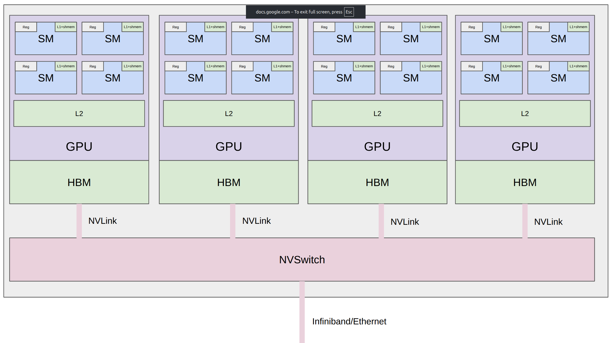
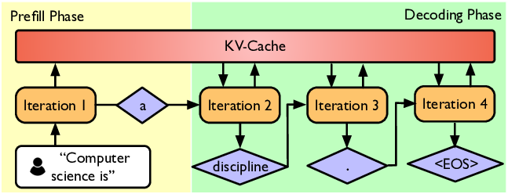

Assignment 1: Basics
Lectures 01–04 | Starter Code ↗ | PDF ↗
TL;DR
- Build everything from scratch: BPE tokenizer, Transformer, AdamW optimizer, training loop — no high-level framework components.
从零构建一切：BPE 分词器、Transformer、AdamW 优化器、训练循环——不使用高级框架组件。 - Train on TinyStories (small) and OpenWebText (large). Leaderboard: minimize perplexity in 45 minutes on a B200.
在 TinyStories（小）和 OpenWebText（大）上训练。排行榜：在 B200 上 45 分钟内最小化困惑度。 - Resource accounting: understand FLOPs ($6ND$), memory breakdown, and roofline analysis to know your model's bottlenecks.
资源核算：理解 FLOPs（$6ND$）、显存分解和 roofline 分析以了解模型瓶颈。 - Systems preview: kernels (minimize data movement), parallelism (shard across GPUs), inference (prefill vs decode).
系统预览：核函数（最小化数据搬运）、并行化（跨 GPU 分片）、推理（预填充 vs 解码）。
Key Concepts
BPE 分词器——训练：从 256 字节开始，贪心合并最频繁的对。编码：按序应用合并。需处理预分词（正则切词）和特殊 token。
高效 BPE——朴素编码遍历所有合并规则（慢）。高效版本用 hash map + 优先队列只应用相关的合并。
Transformer 语言模型——Token 嵌入 + 位置嵌入 → $N$ 个 Transformer block → 线性层 → softmax。仅解码器，因果注意力。
RMSNorm——简化的归一化：不减均值，只除 RMS。比 LayerNorm 更便宜。
SwiGLU——FFN 的激活函数：门控线性单元 + Swish 激活。实践中优于 ReLU。
RoPE——旋转位置编码：通过旋转 Q/K 向量编码位置。相对位置信息从旋转角度中自然产生。
交叉熵损失——衡量模型预测下一个 token 的好坏程度。越低越好。
AdamW——解耦权重衰减的 Adam 优化器。维护每个参数的动量和方差估计。LLM 训练的标准优化器。
困惑度 = $e^{\text{交叉熵}}$。可理解为「模型在多少个 token 之间犹豫不决」。越低越好。
6ND 法则——训练总 FLOPs ≈ $6ND$。前向 ≈ $2ND$，反向 ≈ $4ND$。简单但强大的算力预算工具。
算术强度 = FLOPs / 搬运字节数。决定操作是计算瓶颈还是显存瓶颈。GPU 性能分析的关键。
核融合——将多个 GPU 操作合并为一个核，避免冗余显存往返。FlashAttention 通过 tiling 融合注意力。
预填充 vs 解码——预填充并行处理所有 prompt（计算瓶颈）。解码逐 token 生成（显存瓶颈）。不同瓶颈需要不同优化。
Notes
1. Core Deliverables
作业 1 需要从零实现以下内容（不使用框架现成组件）：
- BPE tokenizer — efficient version with pre-tokenization (regex) and special tokens（实现高效 BPE 分词器，含预分词和特殊 token 处理）
- Transformer language model — attention, RMSNorm, SwiGLU, RoPE（实现 Transformer：注意力、RMSNorm、SwiGLU、RoPE）
- Cross-entropy loss（交叉熵损失函数）
- AdamW optimizer（AdamW 优化器）
- Training loop — full pipeline from data loading to gradient updates（完整训练循环：从数据加载到梯度更新）
- Resource accounting — compute FLOPs and memory usage（资源核算：计算 FLOPs 和显存用量）
2. Datasets
- TinyStories: small synthetic dataset of children's stories — fast to train on, good for debugging（小型合成儿童故事数据集——训练快，适合调试）
- OpenWebText: large-scale web text dataset — the real challenge（大规模网络文本数据集——真正的挑战）
3. Leaderboard
Minimize OpenWebText perplexity given 45 minutes on a B200 GPU. This forces you to think about efficiency — you can't just scale up, you need smart architectural and training choices.
在 B200 GPU 上 45 分钟内最小化 OpenWebText 困惑度。这迫使你思考效率——不能单纯靠堆算力，需要聪明的架构和训练决策。
Everything balances expressivity (represent complex dependencies), stability (keep norms in goldilocks zone), and efficiency (runs fast on hardware).
一切都在平衡表达力（建模复杂依赖）、稳定性（数值范围合理）、效率（硬件上跑得快）。
4. Resource Accounting
Before optimizing anything, you need to measure. Resource accounting answers: how much compute and memory does my model need?
在优化任何东西之前，你需要度量。资源核算回答：我的模型需要多少计算量和显存？
4.1 Compute (FLOPs)
Model parameters must be moved from memory (HBM) to the compute units (SMs). A simple rule of thumb for training:
模型参数必须从显存（HBM）搬到计算单元（SM）。训练的简单估算公式：
total_flops = 6 * N * D
# N = number of parameters, D = number of training tokens
# Example: 70B params × 1T tokens
total_flops = 6 * 70e9 * 1e12 = 4.2e23 FLOPsWhy 6? Forward pass ≈ $2ND$ FLOPs (each parameter does a multiply-add per token). Backward pass ≈ $4ND$ (roughly 2× forward). Total ≈ $6ND$.
为什么是 6？前向传播 ≈ $2ND$ FLOPs（每个参数对每个 token 做一次乘加）。反向传播 ≈ $4ND$（约为前向的 2 倍）。总计 ≈ $6ND$。
4.2 Memory
GPU memory holds multiple things simultaneously:
GPU 显存需要同时存放多项内容：
- Parameters: $N$ params × bytes per param (e.g., 2 bytes for bf16)（参数：$N$ 个参数 × 每参数字节数）
- Gradients: same size as parameters（梯度：与参数同样大小）
- Optimizer states: AdamW stores 2 extra copies (momentum + variance) → $2N$ more（优化器状态：AdamW 额外存 2 份——动量+方差→多 $2N$）
- Activations: intermediate values saved for backward pass, scales with batch size × seq len（激活值：为反向传播保存的中间值，随 batch size × 序列长度增长）
4.3 Roofline Analysis
Determines whether an operation is compute-bound or memory-bound:
判断操作的瓶颈是计算还是显存带宽：
Arithmetic intensity = FLOPs / bytes moved
If intensity > machine's compute-to-bandwidth ratio → compute-bound (good! GPU is fully utilized)
If intensity < ratio → memory-bound (GPU is waiting for data, compute units idle)
算术强度 = FLOPs / 搬运字节数。如果强度高于机器的计算带宽比→计算瓶颈（好！GPU 被充分利用）。如果低于→显存瓶颈（GPU 在等数据，计算单元闲置）。
Example: B200 GPU — 2.25 PFLOP/s (bf16), 8 TB/s HBM bandwidth. Crossover point: $2.25 \times 10^{15} / 8 \times 10^{12} \approx 281$ FLOPs/byte. Operations above 281 are compute-bound; below are memory-bound.
B200 GPU：2.25 PFLOP/s bf16 算力，8 TB/s 显存带宽。临界点约 281 FLOPs/字节。高于此为计算瓶颈，低于此为显存瓶颈。
4.4 Benchmarking & Profiling
Theory is important, but always verify with profiling tools. Nsight Systems shows what actually happens on the GPU — kernel launch times, memory transfers, utilization gaps.
理论很重要，但一定要用分析工具验证。Nsight Systems 能显示 GPU 上实际发生的情况——核启动时间、内存传输、利用率空白。

DGX B200 node: 8 GPUs connected via NVSwitch, 2 CPUs, NVMe storage. GPUs within a node communicate fast (NVLink); between nodes is slower (network).
DGX B200 节点：8 张 GPU 通过 NVSwitch 互联，2 个 CPU，NVMe 存储。节点内 GPU 通信快（NVLink），节点间通信慢（网络）。
5. Kernels
A kernel is a function that runs on the GPU. Understanding kernels is key to understanding GPU performance.
核函数是在 GPU 上运行的函数。理解核函数是理解 GPU 性能的关键。
Core principle: Moving data in memory is surprisingly expensive — often more expensive than the computation itself. The GPU can multiply numbers blazingly fast, but spends most of its time waiting for data to arrive from memory. The entire systems story is about one thing: how to minimize data movement.
核心原则：在内存中搬运数据非常昂贵——通常比计算本身更昂贵。GPU 能飞速做乘法，但大部分时间都在等数据从显存送过来。整个系统的故事都围绕一件事：如何最小化数据搬运。
5.1 The Problem with Standard PyTorch
When using PyTorch, each primitive operation (matmul, add, activation) launches a separate kernel. Between each kernel, intermediate results are written back to HBM and then read again — wasteful round-trips.
标准 PyTorch 的问题：每个基本操作（矩阵乘法、加法、激活函数）各自启动一个核。每个核之间，中间结果写回 HBM 然后又读出来——浪费的往返。
# Naive: 3 separate kernels, 3 HBM round-trips
read HBM → compute A → write HBM # kernel 1
read HBM → compute B → write HBM # kernel 2
read HBM → compute C → write HBM # kernel 3
# Fused: 1 kernel, 1 HBM round-trip
read HBM → compute A, B, C → write HBM # single fused kernel5.2 Kernel Fusion Strategies
Can write custom kernels to make GPUs go brrr:
编写自定义核函数让 GPU 飞起来：
- Operator fusion: combine matmul + activation into one kernel (e.g., matmul + SwiGLU)（算子融合：将矩阵乘法+激活函数合并为一个核）
- Tiling (FlashAttention): break the $n \times n$ attention matrix into small tiles that fit in SRAM, compute tile by tile without ever materializing the full matrix in HBM（分块——FlashAttention：把注意力矩阵切成能放进 SRAM 的小块，逐块计算，从不在 HBM 中生成完整矩阵）
5.3 Advanced GPU Concepts
- Warp divergence: threads in a warp take different branches → serialized execution（warp 分歧：同一 warp 中的线程走不同分支→串行执行）
- Memory coalescing: adjacent threads should access adjacent memory addresses for efficient reads（内存合并访问：相邻线程应访问相邻内存地址以提高读取效率）
- Bank conflicts: multiple threads accessing the same shared memory bank → serialized（Bank 冲突：多个线程同时访问同一共享内存 bank→串行化）
- Occupancy: ratio of active warps to maximum possible — higher ≈ better latency hiding（占用率：活跃 warp 占最大可能的比例——越高越能隐藏延迟）
- Bulk-async memory transfers: overlap data movement with computation（批量异步内存传输：数据搬运和计算重叠执行）
5.4 Kernel Languages
Write kernels in:
- CUDA — low-level, full control over the GPU（底层、对 GPU 完全控制）
- Triton — Python-like, used in Assignment 2 for fused RMSNorm（类 Python 语法，A2 用来写融合 RMSNorm）
- CUTLASS — NVIDIA's template library for high-performance matrix operations（NVIDIA 的高性能矩阵运算模板库）
- ThunderKittens — research framework for rapid kernel prototyping（快速核函数原型开发的研究框架）
6. Parallelism
What if you have 1024 GPUs? Data movement between GPUs is even slower than within a GPU, but the same "minimize data movement" principle holds.
如果你有 1024 张 GPU 呢？GPU 之间的数据搬运比 GPU 内部更慢，但同样的「最小化数据搬运」原则依然适用。
6.1 Collective Operations
Classic collective operations are the building blocks of multi-GPU communication:
经典集体通信操作是多 GPU 通信的基础组件：
- All-reduce: every GPU sends its data, all GPUs receive the sum — used for gradient synchronization in data parallelism（All-reduce：每个 GPU 发送数据，所有 GPU 收到总和——用于数据并行中的梯度同步）
- All-gather: every GPU sends its shard, all GPUs receive the full tensor（All-gather：每个 GPU 发送自己的分片，所有 GPU 收到完整张量）
- Reduce-scatter: reduce + scatter result across GPUs（Reduce-scatter：归约后将结果分散到各 GPU）
6.2 What to Shard
Shard memory across GPUs: parameters, activations, gradients, optimizer states — each can be distributed independently.
在 GPU 间分片的内容：参数、激活值、梯度、优化器状态——每个都可以独立分布。
6.3 Types of Parallelism
| Type | What's Distributed | When to Use | 中文说明 |
|---|---|---|---|
| Data parallelism (DDP) | Data batches; all-reduce gradients | Always — simplest starting point | 数据并行：最简单的起点 |
| Tensor parallelism | Split weight matrices across GPUs | Within a node (needs fast interconnect) | 张量并行：节点内，需快速互联 |
| Pipeline parallelism | Different layers on different GPUs | Across nodes (less communication) | 流水线并行：跨节点，通信少 |
| Sequence parallelism | Split long sequences across GPUs | Very long context windows | 序列并行：超长上下文 |
| Expert parallelism | Different MoE experts on different GPUs | MoE models only | 专家并行：MoE 专用 |
The unifying principle across kernels and parallelism: minimize data movement. Within a GPU: minimize HBM ↔ SM transfers. Across GPUs: minimize inter-GPU communication. Across nodes: minimize network traffic.
核函数和并行化的统一原则：最小化数据搬运。GPU 内部：减少 HBM ↔ SM 传输。GPU 之间：减少 GPU 间通信。节点之间：减少网络流量。
7. Inference
Goal: generate tokens given a prompt. This is needed not just for serving users, but also for reinforcement learning (generate rollouts), test-time compute (chain-of-thought reasoning), and evaluation (benchmarks).
目标：根据 prompt 生成 token。不仅用于服务用户，还用于强化学习（生成 rollout）、测试时计算（思维链推理）和评估（基准测试）。
7.1 Two Phases: Prefill & Decode
Inference has two phases with fundamentally different characteristics:
推理有两个阶段，特性截然不同：

Prefill processes all prompt tokens at once; Decode generates tokens one by one, using KV-Cache to avoid recomputation.
预填充一次处理所有 prompt token；解码逐个生成 token，用 KV-Cache 避免重复计算。
| Phase | What Happens | Bottleneck | Why | 中文说明 |
|---|---|---|---|---|
| Prefill | Process all prompt tokens in parallel | Compute-bound | Large matrix multiplications, like training | 预填充：并行处理 prompt，像训练一样做大矩阵乘法 |
| Decode | Generate one token at a time | Memory-bound | Must load entire model weights for each single token | 解码：逐 token 生成，每个 token 都要加载全部模型权重 |
7.2 Speeding Up Decoding
Use a cheaper model:
用更便宜的模型：
- Model pruning: remove less important weights/neurons（模型剪枝：移除不重要的权重/神经元）
- Quantization: reduce precision (FP16 → INT8 → INT4) — fewer bytes to load per parameter（量化：降低精度——每个参数需要加载的字节数更少）
- Distillation: train a smaller model to mimic the larger one（蒸馏：训练一个小模型来模仿大模型）
Speculative decoding (exact!):
投机解码（数学上精确！）：
Use a cheap "draft" model to quickly generate multiple candidate tokens. Then use the full model to score all candidates in parallel (like prefill — compute-bound, fast!). Accept tokens that the full model agrees with. This is mathematically exact — produces the same distribution as the full model, just faster.
用一个便宜的「草稿」模型快速生成多个候选 token。然后用完整模型并行打分所有候选（像预填充一样——计算瓶颈，快！）。接受完整模型同意的 token。这是数学上精确的——产生与完整模型完全相同的分布，只是更快。
7.3 Systems Optimizations
- KV cache: store computed Key/Value pairs from previous tokens — avoids recomputing attention for the entire history at each step（KV 缓存：存储之前 token 计算过的 Key/Value 对——避免每步重新计算整个历史的注意力）
- Fused kernels: same principle as training — minimize HBM round-trips（融合核函数：与训练相同的原则——减少 HBM 往返）
- Continuous batching: dynamically add/remove requests from a batch as they finish, maximizing GPU utilization（连续批处理：请求完成后动态添加/移除，最大化 GPU 利用率）